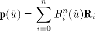
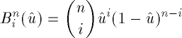
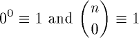
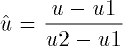

![[Front]](images/OpenGL3.gif)
![[Reference]](../buttons/ReferenceOff.gif)
![[Imp. Guide]](../buttons/ImpGuideOff.gif)
![[Index]](../buttons/IndexOff.gif) glMap1d, glMap1f: define a one-dimensional evaluator.
glMap1d, glMap1f: define a one-dimensional evaluator.
C Specification |
Parameters |
Description |
Notes |
Errors |
Associated Gets |
See Also
void glMap1d(
GLenum target,
GLdouble u1,
GLdouble u2,
GLint stride,
GLint order,
const GLdouble *points)
void glMap1f(
GLenum target,
GLfloat u1,
GLfloat u2,
GLint stride,
GLint order,
const GLfloat *points)
- target
- Specifies the kind of values that are generated by the evaluator.
Symbolic constants GL_MAP1_VERTEX_3,
GL_MAP1_VERTEX_4, GL_MAP1_INDEX,
GL_MAP1_COLOR_4, GL_MAP1_NORMAL,
GL_MAP1_TEXTURE_COORD_1,
GL_MAP1_TEXTURE_COORD_2,
GL_MAP1_TEXTURE_COORD_3, and
GL_MAP1_TEXTURE_COORD_4 are accepted.
- u1, u2
- Specify a linear mapping of u, as presented to
glEvalCoord1, to $u hat$, the variable that is evaluated by the
equations specified by this command.
- stride
- Specifies the number of floats or doubles between the beginning of one
control point and the beginning of the next one in the data structure
referenced in points. This allows control points to be
embedded in arbitrary data structures. The only constraint is that the
values for a particular control point must occupy contiguous memory
locations.
- order
- Specifies the number of control points. Must be positive.
- points
- Specifies a pointer to the array of control points.
Evaluators provide a way to use polynomial or rational polynomial mapping to
produce vertices, normals, texture coordinates, and colors. The values
produced by an evaluator are sent to further stages of GL processing just as
if they had been presented using glVertex, glNormal, glTexCoord, and glColor commands, except that the generated
values do not update the current normal, texture coordinates, or color.
All polynomial or rational polynomial splines of any degree (up to the maximum
degree supported by the GL implementation) can be described using evaluators.
These include almost all splines used in computer graphics: B-splines, Bezier
curves, Hermite splines, and so on.
Evaluators define curves based on Bernstein polynomials. Define
p(û ) as

where Ri is a control point and
Bin(û ) is the
ith Bernstein polynomial of degree n
(order = n + 1):

Recall that

glMap1 is used to define the basis and to specify what kind of
values are produced. Once defined, a map can be enabled and disabled by
calling glEnable and glDisable with the map name, one of the nine
predefined values for target described below. glEvalCoord1 evaluates the
one-dimensional maps that are enabled. When glEvalCoord1 presents a value u,
the Bernstein functions are evaluated using û, where

target is a symbolic constant that indicates what kind of
control points are provided in points, and what output is
generated when the map is evaluated. It can assume one of nine predefined
values:
- GL_MAP1_VERTEX_3
- Each control point is three floating-point values representing
x, y, and z. Internal glVertex3 commands are generated when
the map is evaluated.
- GL_MAP1_VERTEX_4
- Each control point is four floating-point values representing
x, y, z, and w. Internal glVertex4 commands are generated when
the map is evaluated.
- GL_MAP1_INDEX
- Each control point is a single floating-point value representing a color
index. Internal glIndex commands are
generated when the map is evaluated but the current index is not updated
with the value of these glIndex
commands.
- GL_MAP1_COLOR_4
- Each control point is four floating-point values representing red, green,
blue, and alpha. Internal glColor4
commands are generated when the map is evaluated but the current color is
not updated with the value of these glColor4 commands.
- GL_MAP1_NORMAL
- Each control point is three floating-point values representing the
x, y, and z components of a normal vector. Internal
glNormal commands are generated when
the map is evaluated but the current normal is not updated with the value
of these glNormal commands.
- GL_MAP1_TEXTURE_COORD_1
- Each control point is a single floating-point value representing the
s texture coordinate. Internal glTexCoord1 commands are generated
when the map is evaluated but the current texture coordinates are not
updated with the value of these glTexCoord commands.
- GL_MAP1_TEXTURE_COORD_2
- Each control point is two floating-point values representing the
s and t texture coordinates. Internal glTexCoord2 commands are generated
when the map is evaluated but the current texture coordinates are not
updated with the value of these glTexCoord commands.
- GL_MAP1_TEXTURE_COORD_3
- Each control point is three floating-point values representing the
s, t, and r texture coordinates. Internal glTexCoord3 commands are generated
when the map is evaluated but the current texture coordinates are not
updated with the value of these glTexCoord commands.
- GL_MAP1_TEXTURE_COORD_4
- Each control point is four floating-point values representing the
s, t, r, and q texture coordinates. Internal
glTexCoord4 commands are generated
when the map is evaluated but the current texture coordinates are not
updated with the value of these glTexCoord commands.
stride, order, and points
define the array addressing for accessing the control
points. points is the location of the first control point,
which occupies one, two, three, or four contiguous memory locations, depending
on which map is being defined. order is the number of control
points in the array. stride specifies how many float or
double locations to advance the internal memory pointer to reach the next
control point.
As is the case with all GL commands that accept pointers to data, it is as if
the contents of points were copied by glMap1 before
glMap1 returns. Changes to the contents of points
have no effect after glMap1 is called.
- GL_INVALID_ENUM is generated if target is
not an accepted value.
- GL_INVALID_VALUE is generated if u1 is
equal to u2.
- GL_INVALID_VALUE is generated if stride
is less than the number of values in a control point.
- GL_INVALID_VALUE is generated if order is
less than 1 or greater than the return value of
GL_MAX_EVAL_ORDER.
- GL_INVALID_OPERATION is generated if glMap1 is executed between the execution
of glBegin and the corresponding
execution of glEnd.
glGetMap
glGet with argument
GL_MAX_EVAL_ORDER
glIsEnabled with argument
GL_MAP1_VERTEX_3
glIsEnabled with argument
GL_MAP1_VERTEX_4
glIsEnabled with argument
GL_MAP1_INDEX
glIsEnabled with argument
GL_MAP1_COLOR_4
glIsEnabled with argument
GL_MAP1_NORMAL
glIsEnabled with argument
GL_MAP1_TEXTURE_COORD_1
glIsEnabled with argument
GL_MAP1_TEXTURE_COORD_2
glIsEnabled with argument
GL_MAP1_TEXTURE_COORD_3
glIsEnabled with argument
GL_MAP1_TEXTURE_COORD_4
glBegin,
glColor,
glEnable,
glEvalCoord,
glEvalMesh,
glEvalPoint,
glMap2,
glMapGrid,
glNormal,
glTexCoord,
glVertex
![[Prev]](buttons/ArrowLeftOff.gif)
![[Next]](buttons/ArrowRightOff.gif)
![[Up]](buttons/ArrowUpOff.gif) C Specification
C Specification